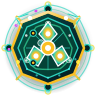
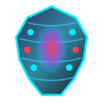
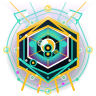
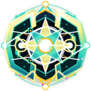

1. 游戏介绍 · 《微界演化：基因沙盘》核心法则手册
三维数据闭环 · 躯干与五插槽制衡 · 感官驱动视界 · 单控始祖与同族 NPC 群落

① 三维核心数据闭环
- 生命值 (HP)：个体存活状态，$\le 0$ 时死亡裂解为有机肉块（同族禁食己方遗骸）；饱食度 $>60\%$ 时经核心器官缓慢回血。
- 能量值 (Energy)：通过进食微藻/肉块补充，随时间按总代谢 BMR 下降；加速/普攻耗少量，主动技能耗中等，分裂/进化耗大量；归零则每秒扣减 5% MaxHP。
- 基因值 (GP)：击败敌人按概率掉落（玩家亲手击杀 75% 高概率，同族电脑 NPC 击杀 12% 低概率，首领 100%），全种群共享用于解锁器官与进化。

② 躯干与五大器官插槽
- 修改躯干 = 新种群诞生：T01~T04 四阶躯干决定基础生命、体积 $V$ 与插槽数（5 / 7 / 9 / 12 槽）；体积越大自然能耗越高、移动与转向阻尼越大（非越大越强）。
- 五大插槽：核心（消化/循环/生殖）、感官（眼/耳）、口部（植食高转化/肉食强撕咬/杂食兼顾）、运动（推进/转向/位移技）、功能（鳞片/拟态/墨囊/毒腺/骨刺/放电）。

③ 感官视界与昼夜平衡
- 视觉器官 (眼)：渲染前向彩色扇形画面，等级越高扇角/视距越大、色彩越清晰；受黑夜（视距-45%）及敌方拟态皮肤、墨囊克制。
- 听觉器官 (耳)：渲染 360° 黑白轮廓声呐画面，不受黑夜影响，按脉冲刷新运动目标，但对静止微藻感知弱。
- 动态承载力：环境定时在局部区域刷新食物（能量注入），全体生物自然消耗能量，自动抑制无脑过量繁殖。

④ 始祖操控与局内基因库
- 单控始祖 + 同族 NPC：新种群诞生时仅有 1 只玩家控制的始祖个体（镜头中心严格锁定），分裂繁衍的后代由电脑 AI 自主控制（支持信标三态切换）。
- 局内基因库存取：【6.游戏画面】中可随时修改设计、点击【存入基因库】保存，或点击【加载基因库】加载（自动区分同躯干器官进化与跨躯干诞生新种群）。